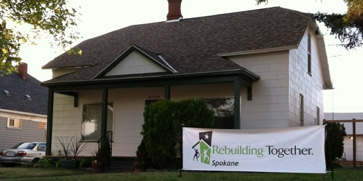

National Rebuilding Day

National Rebuilding Day focuses on the power of one day and uniting communities.
On the last Saturday of April, thousands of Volunteers all over the nation gather together in an effort to help serve their local community, and provide critical and somteimes life-saving repairs. These projects provide free modifications and repairs to the residences of low-income homeowners, especialy the elderly, veterans, disabled, and those with children.
To submit a request for aid, download the appropriate application and mail it to the address listed below.
Rebuilding Together SpokaneP.O Box 18588
Spokane WA, 99228